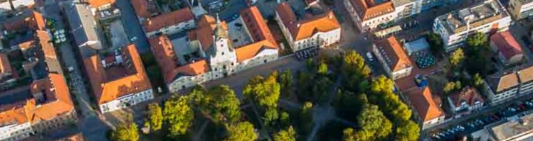

Izbornik
|
O nama

Veleučilište u Bjelovaru nastalo je 30. listopada 2017. godine donošenjem odluke Grada Bjelovara o promjeni naziva Visoke tehničke škole u Bjelovaru u Veleučilište u Bjelovaru. Visoka tehnička škola u Bjelovaru osnovana je 2007. godine odlukom Grada Bjelovara koji je jedini osnivač ustanove. U strogom centru grada, a istovremeno mirnom i sigurnom okruženju na udaljenosti od 80 km od glavnog grada studenti mogu studirati u suvremeno opremljenim nastavnim prostorima i laboratorijima.
Ustanova izvodi tri studijska programa:
1. preddiplomski stručni studij Mehatronika,
2. preddiplomski stručni studij Sestrinstvo.
3. preddiplomski stručni studij Računarstvo.
|